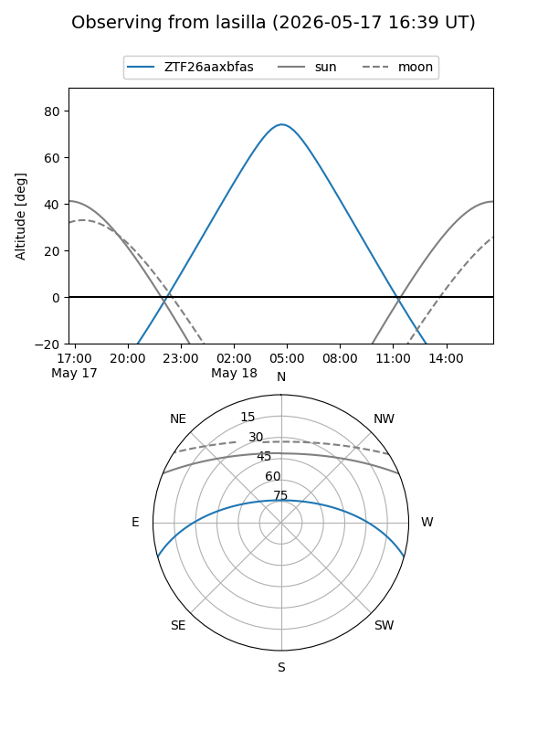
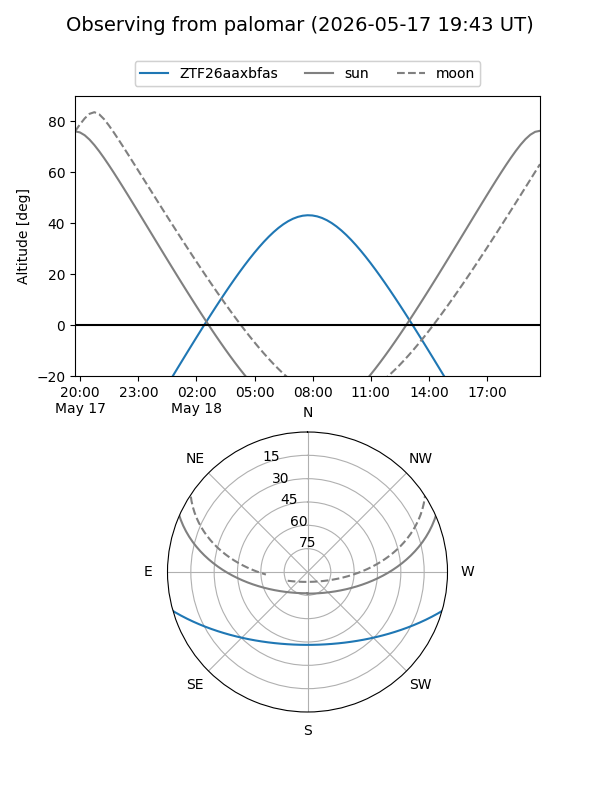

ZTF26aaxbfas
Target ZTF26aaxbfas at 2026-05-18 08:17
Aliases and brokers:
FINK: link
Lasair: link
ALeRCE: link
alt names
ZTF26aaxbfas (ztf,fink_ztf)
Coordinates:
equatorial (ra, dec) = 235.4561,-13.40066
equatorial (HMS+DMS) = 15:41:49.46,-13:24:02.37
galactic (l, b) = (353.9516,+32.11614)
Flags:
Photometry:
last ztfg=19.07
2 ztfg detections
Lightcurve
Visibility


Additional plots